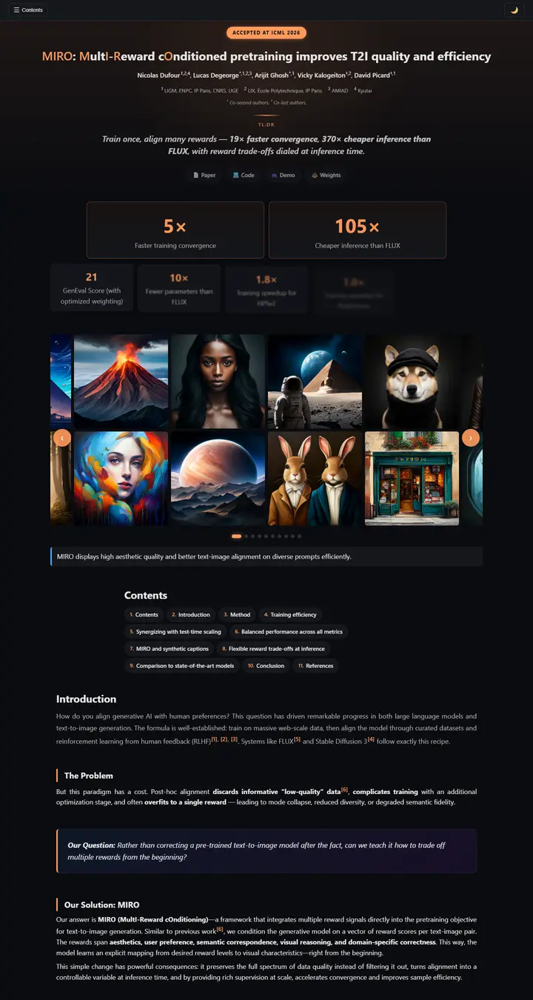

MIRO: MultI-Reward cOnditioned pretraining improves T2I quality and efficiency
A darkroom with one orange safelight: every badge, number and rule glows the same warm tangerine against near-black.

Checked against the rendered page. KPI numbers count up on scroll; the screenshot shows intermediate values (13x, 247x) while the markup's final values are 19x and 370x. No web font is loaded; the system UI face renders. A light theme exists behind a toggle.
Why it is here
Dark theme with a consistent orange accent through the badge, stats and heading bars. Tiered stat cards, an image carousel and a chip-style contents list give it a confident blog-like presentation.
Overview
Color Palette
Typography
system-ui
MIRO: MultI-Reward cOnditioned pretraining improves T2I quality and ef
Abstract · Method · Results · BibTeX — 0123456789
Courier New
MIRO: MultI-Reward cOnditioned pretraining improves T2I quality and ef
Abstract · Method · Results · BibTeX — 0123456789
KaTeX
MIRO: MultI-Reward cOnditioned pretraining improves T2I quality and ef
Abstract · Method · Results · BibTeX — 0123456789
Spacing & Shape
Page Modules
Guidelines
More like this

CRAFT: Training-Free Cascaded Retrieval for Tabular QA
A tidy product manual in pale blueprint blue, where every stage wears its own colored edge.

Efficient Self-Evaluation for Diffusion Language Models via Sequence Regeneration
A tidy stack of rounded cards washed in a blue-violet-apricot dawn, signed with a gradient wordmark.

FIGMA: Towards FIne-Grained Music retrievAl
A music journal on warm paper: a heavy Newsreader headline under a red kicker, big red serif numerals for the results, and figures resting in soft cream frames.

GuideDog: A Real-World Egocentric Multimodal Dataset for Blind and Low-Vision Accessibility-Aware Guidance
A quiet monograph page: one serif column, oxblood ink for the links, and a table that blushes only at its own row.

LaMI: Augmenting Large Language Models via Late Multi-Image Fusion
A careful conference handout: Noto Serif headings, navy outlined buttons and soft grey bands taking turns.

PairCoder++: Pair Programming as a Universal Paradigm for Verified Code-Driven Multimodal and Structured-Artifact Generation
A crisp white product page: a blue announcement strip, ink-black pill buttons and every figure on a soft-shadowed card.